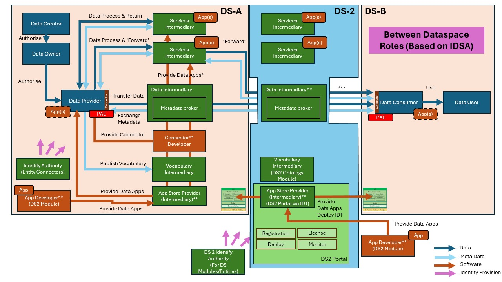
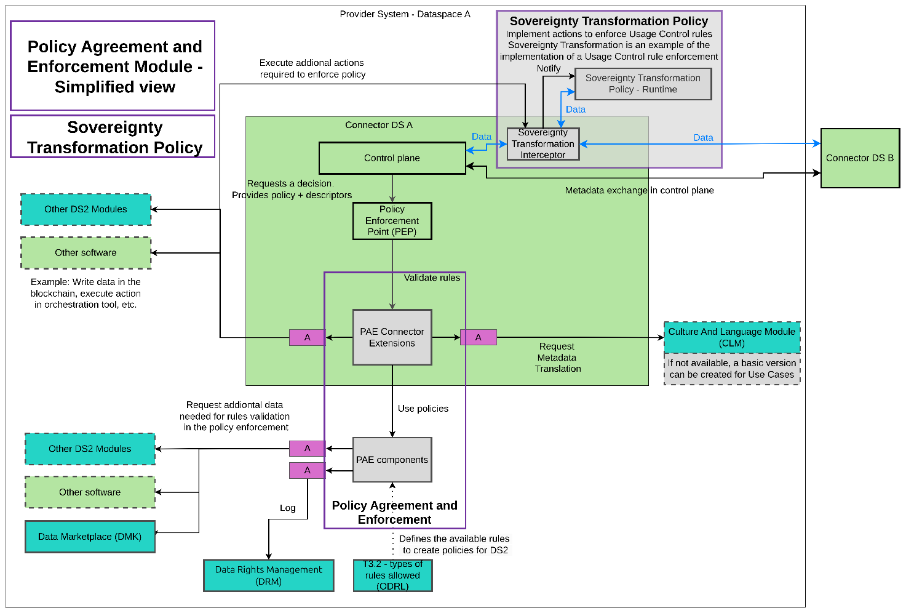
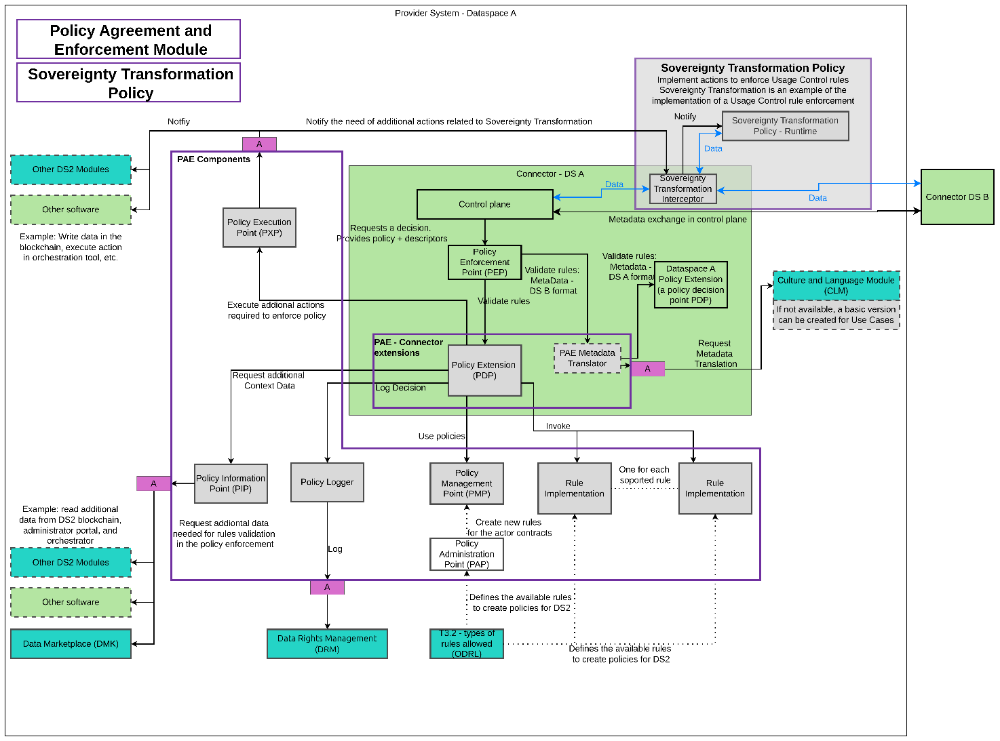
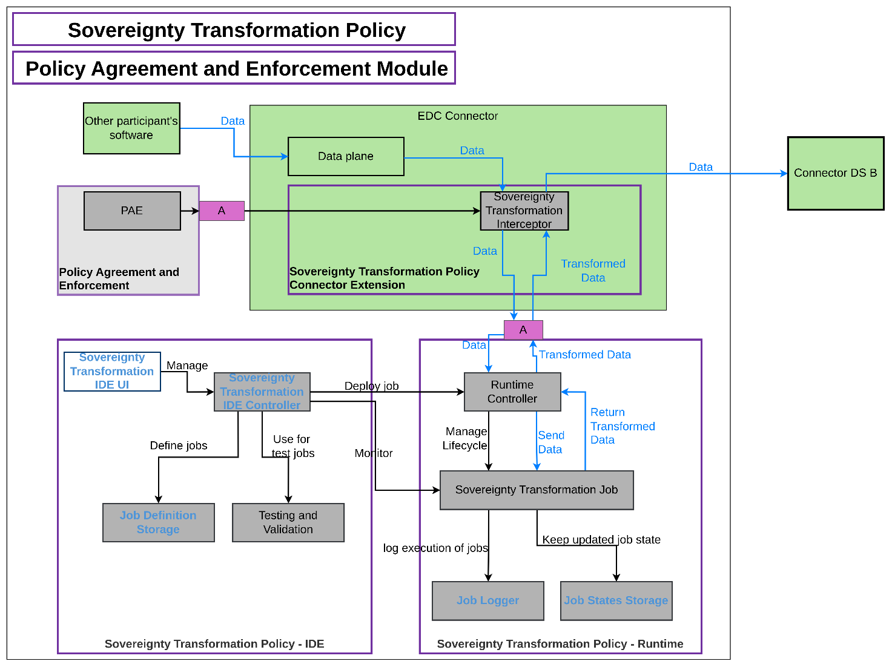

Policy Agreement and Enforcement (PAE)
Use the table below as an example and replace with the links to the module's DS2 GitHub repository and GitHub project.
| Project Links |
|---|
| Software GitHub Repository https://github.com/ds2-eu/pae_module.git |
| Progress GitHub Project https://github.com/orgs/ds2-eu/projects/21 |
General Description
The primary function of the Policy Agreement and Enforcement Module (DS2 PAE) is to ensure compliance with the established policies and regulations governing data exchange among users in different data spaces. Henceforth, policies, regulations, and agreements are synonymous with the term policy. The policies are evaluated as the control plane stage of data sharing in the Connector. The policies serve two main purposes: Access Control and for Usage Control. Access Control determines whether access to data is granted or denied. Usage Control dictates how the data can be used once access is granted.
Policies in dataspaces define who can access the data and the restrictions on data use for those with access. A policy, in this context, is a set of rules governing data sharing within a dataspace and, more specifically for DS2, between dataspaces as well as their participants. The main function of this module is to enforce policies associated with a data-sharing contract, an agreement between a provider and a consumer. The agreed policy, the contract, specifies the rules both parties must follow. This module focuses on rules that can be automatically enforced by software. Policies are evaluated before data transmission begins. Rules that cannot be automatically enforced are logged alongside the contract agreement for accountability. There will be two types of rules, Access Control and Usage Control.
- Access Control rules define who is authorized to access the data. If these rules are not met, data sharing is not permitted.
- Usage Control rules define how the data can be used. Usage rules may require additional actions during or after data sharing, which might need to be executed by other software components or through human intervention.
The Policy and Agreement Enforcement Module will notify the relevant modules about the need for these actions.
Architecture
The figure below represents the module fit into the DS-DS environment.

The figure below represents the actors, internal structure, primary sub-components, primary DS2 module interfaces, and primary other interfaces of the module.



Component Definition
The figure below represents the actors, internal structure, primary sub-components, primary DS2 module interfaces, and primary other interfaces of the module.
The following figure expands on the previous one by detailing the subcomponents for policy enforcement and their relationships with other modules.
This module has the following subcomponent and other functions: Note that the large green box represents a connector. It is depicted this way to clarify which components are connector extensions deployed within the connector, and which are deployed outside it.
-
Policy and Agreement Enforcement Module:
-
Policy Extension (PDP): This extension will be integrated into the Policy Enforcement Point of the Connector. It will oversee the coordination of all policies supported by DS2.
- PAE Metadata Translator: This optional extension will translate metadata to ensure compatibility with rule enforcement across different dataspaces with varying participant and service descriptors. As of this document's edition, it is to be decided if this will be handled by the Connector itself, through the CLM Module, or through the Catalog Module therefore, it will be implemented as needed.
- Sovereignty Transformation Interceptor: This extension will enable policy-oriented data transformations during data exchange - for example anonymising data. It serves as the implementation of a Policy Execution Point. Note that the Data Transformation feature of DDT module is not used to do this since it is more generic
- Sovereignty Transformation Policy - Runtime: This component provides an example of Usage Control rule enforcement. It is expanded and described in detail later in this section.
- Policy Execution Point (PXP): This component interfaces with the execution of additional actions required when a policy is enforced and after policy evaluation. An example is the Sovereignty Transformation Interceptor, which will be used to enforce certain usage control rules.
- Policy Information Point (PIP): This component is responsible for implementing interfaces with all relevant modules and external software (e.g., retrieving participant information from a CRM application) from which additional context data is needed for policy evaluation. A mandatory interface is with the Data Marketplace module to validate asset purchases.
- Policy Logger: This component will handle all logging related to policy enforcement. In addition to internal logging, policy decisions can be recorded in the Data Rights Management module.
- Policy Management Point (PMP): This component stores all the policies that must be enforced for each share of data. Specifically, it will store the contract offers, including the reference to the data offered and the associated policies.
- Rule Implementation: Each rule within a policy must have a corresponding software component that supports its evaluation. A Rule Implementation component may support several rules and might rely on an existing rule engine or be implemented from scratch, depending on the rules it needs to support. Access Control rules will be enforced based on these implementations. ODRL will be used by T3.2 for defining the types of rules allowed. Within PAE an example of Usage Control rules will be implemented using the Sovereignty Transformation Policy. In these cases, the Rule Implementation will evaluate the rule, but the needed actions to enforce the rule are delegated, in the mentioned example to the Sovereignty Transformation Policy. The responsibility of PAE is to notify to the required component. If there is not such a component to automatically handle rule actions, the evaluation will be logged with the Policy Logger, but any further verification or action is out of the scope of this module.
- Policy Administration Point (PAP): This is a UI that allows for the definition of policies to be used in data sharing. Policy definitions are stored in the PMP. Policies will be defined using templates developed based on the types of rules identified in WP3. The tool will assist users in easily defining rules and will generate machine-readable policies.
- Sovereignty Transformation Policy:
- Sovereignty Transformation Policy - IDE: This group of components is shared with the T6.2 Data Inspector. Some of them will be developed based on existing technology, specifically the Dataflow component of the Onesait Platform open-source product. While T4.1 Policy Enforcement focuses on defining and executing transformation jobs for policy enforcement, the Data Inspector will enhance the current capabilities of Dataflow to include data inspection, monitoring, and notifications. T6.2 will lead this component development, and T4.1 will be built on the improved version from T6.2. Therefore, T4.1 has a dependency on T6.2, but the opposite is not true.
- Sovereignty Transformation IDE UI: This graphical user interface allows users to define Sovereignty Transformation Jobs for enforcing policy rules that require data modifications. Examples include field removal and data anonymization. A Sovereignty Transformation Job definition is a data pipeline with an input, an output, and a set of transformation stages in between. This component is based on existing INDRA software, with updates needed to support new features for DS2.
- Sovereignty Transformation IDE Controller: This component manages Sovereignty Transformation Jobs during design time and oversees their deployment and monitoring at runtime. It is based on current INDRA software but requires significant upgrades to split the tool into the IDE component and the Runtime component (potentially several).
- Testing and Validation: This component will encompass test definitions and include the storage of small datasets specifically for automatic testing purposes as well as providing validation functionality. The automated tests will be designed to thoroughly validate the accuracy and correctness of the sovereignty transformation jobs. This validation process is essential to ensure that the jobs meet the required standards and perform as expected before they are deployed. By conducting these tests beforehand, potential issues can be identified and addressed, ensuring a smooth and reliable deployment of the sovereignty transformation jobs.
- Job Definition Storage: This component stores definitions of Sovereignty Transformation Jobs, based on INDRA software, with extensions planned to improve version control of the definitions.
- Sovereignty Transformation Policy - Runtime:
- Runtime Controller: This component will manage the execution of Sovereignty Transformation Jobs during runtime. It will define the interface for integrating job execution with the Sovereignty Transformation Interceptor and will handle the job lifecycle: deployment, upgrade, removal, start, and stop.
- Sovereignty Transformation Job: This component represents the runtime execution of a data pipeline definition. Each transformation supported will require a Sovereignty Transformation Job definition. One instance of this component will be created for each Sovereignty Transformation Job needed at runtime, even for the same definition. The creation of these instances will be managed by the Runtime Controller.
- Job Logger: This component logs all relevant information about each job execution. Based on INDRA software, it will require minimal development to adapt to changes in other module components.
- Job State Storage: This component stores the states of job executions throughout their lifecycle, enabling job resumption in the event of failures during execution. Based on INDRA software, it will require minimal development.
Interfaces with other modules:
- T3.2 Types of rules allowed (ODRL): This will define the types of rules that might be used in policy definition. The types of rules will be defined using the ORDL standard, which has been selected by IDSA for policy enforcement in dataspaces. Once these rules are defined, the Policy and Agreement Enforcement module will be responsible for providing software support to enforce all rules that can be evaluated without human intervention.
- Data Right Management (DRM): DRM will be used by the Policy and Agreement Enforcement to log the decisions about policy.
- Data Marketplace (DMK): The Data Marketplace will be queried by the Policy and Agreement Enforcement module to obtain additional information if a policy requires a purchase to obtain data.
- Culture and Language Module (CLM): Integration with the T5.1 Knowledge Base will be implemented to translate metadata, ensuring compatibility across different dataspaces. If it is determined later in the project that the Culture and Language Module is unsuitable for this task, simple mappings using the metadata from the project's use cases will be employed to prevent blocking the implementation.
- Other Software / Other DS2 Modules: The PAE module defines APIs to obtain additional information needed for the policy enforcement process, such as metadata about participants or services that may not be accessible via the connector. In such cases, PAE will acquire the necessary data. Additionally, if any rules require actions to be executed by other software or DS2 modules, PAE will notify the requirement when evaluating the rules.
Screenshots
N/A
Commercial Information
| Organisation (s) | License Nature | License |
|---|---|---|
| Indra | Open Source | Apache 2.0 |
Top Features
- Integrated with EDC Connector
- Enforcement of policies defined in DS2
- Use of contextual information about participants obtained from other DS2 modules.
- Capabilities to enforce not only access rules but also some usage rules.
How To Install
The Policy and Agreement Enforcement Module is provider together with the DS2 Connector.
The software for Sovereignty Transformation Policy ...
TBC
Requirements
The same that for DS2 Connector.
The software for Sovereignty Transformation Policy is highly dependent on the volume of data to process. It is based on DINS module.
Software
- DS2 Connector
- DINS module for Sovereignty Transformation Policy
Summary of installation steps
TBC
Detailed steps
TBC
How To Use
TBC
Other Information
TBC
OpenAPI Specification
TBC
Additional Links
TBC